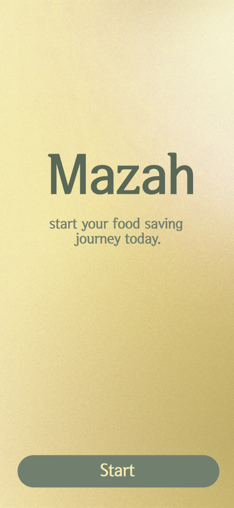
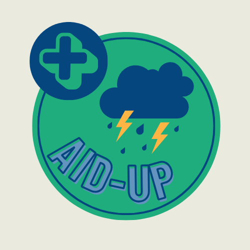
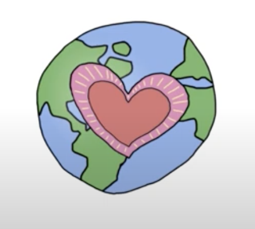

Project Gallery
Mazah ♻️
An app designed to reduce food waste starting with our daily routines. Funded by National Geographic.

Aid-Up ⛈️
Connects people in need with real-time, location-based disaster relief.

ZeroTrace 🚗
ZeroTrace is a carbon footprint tracking app for drivers that provides insights and recommendations for reducing emissions. It promotes eco-friendly driving habits and encourages sustainable practices.
.png)
CauseMate 🫶
An app designed to connect students and local nonprofits and organizations, facilitating engagement in meaningful community service projects.

Website developer for Faiza Finance, a nonprofit encouraging muslim students to achieve financial literacy.
This was my group's submission for the FearLess, Tech More Innovation Challenge. We created a prototype for an app called, "Salus" on figma. Salus is a food wellness app designed to help you manage your diet by providing meal plans, alternatives, and recipes tailored to your personal preferences.
This is my group's task submission for the Uber Hackathon 2023. We developed an app using Swift and SwiftUI that allows users to track their carbon emissions and find local areas to donate to.
I created this website while participating in the 2023 Minerals fo Technology Challenge. This website is aimed to help people across the US to find local e-waste recycling centers and inform others on the issue of e-waste.
I created this website during Girls Who Code SPP 2023, for my final project. I coded it with HTML & CSS, along with JavaScript to create an ocean fact generator.
I used pandas to create scatter plot, comparing the percent of women with secondary education over time from Haiti with Ethiopia.
I programmed this in python to allow users to input any message they would like to encrypt or decrypt, using Caeser's Cipher. The cipher can have a key ranging from 0 to 93.
This program was made with python that allows users to input an encrypted message without knowing the key. Then, the program will go through all the possible messages that the encrypted message has, ranging from keys 0-93.


